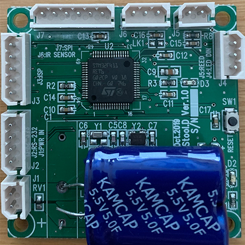

SafeT
- Date
- 2019
- Project Type
- Development
- Description
- Encourage the users exercise by lighting LED interaction
- Responsibility
- 1) Embedded: STM32 MBED, LED Control
- 2) Circuit Design: PCB/PCA
- URL
- Press Release - iF Design Award 2019
Background
Emergency warning triangles is an item to help alert traffic and other drives that they should be aware of something ahead. Howerver highways and roadsides can be dangerous places, and many accidents occur due to installation by drivers

Big Question : How might we might provide LED interaction for users?
- Development
- Prototype
- Requirement: Moving wheel, Control remotely
- Visualization: Solidworks, Adobe Illustrator, After Effect
- Embedded: STM32 MBED, Motor Control
- Prototyping: 3D printing
